청소년상담사-2급(2교시) (2017-09-16 기출문제)
1과목: 진로상담
1. 홀랜드(J. Holland) 직업성격유형론에 관한 설명으로 옳지 않은 것은?
- 기업적 유형(E)은 자료를 체계적으로 잘 처리하고 기록을 정리하는 것을 좋아한다.
- 진로선택에 있어서 성격적 특성을 중요시하며, 발달과정에 대해서는 설명하지 않는다.
- 개인의 성격특징과 직무환경 특성간 일치성(congruence)이 높을 때 직업만족, 직업성취 수준이 높아질 수 있다.
- 실재적이면서 탐구적인 성격유형(RI)은 사회적이면서 관습적인 성격유형(SC)보다 일관성(consistency)이 높다.
- 변별성(differentiation)이 낮은 사람은 진로를 결정하는 데 어려움을 가질 수 있다.
(정답률: 알수없음)

2. 한국표준직업분류에 관한 설명으로 옳지 않은 것은?
- 직무와 직능수준에 근거하여 설계되었다.
- 대분류 3은 사무종사자로 분류되어 있으며 제2 직능수준이 필요하다.
- 우리나라의 독자적인 분류체계로 구성되어 있다.
- 대분류 A '군인'은 직능수준과 무관하게 분류되어 있다.
- 직업분류는 대분류, 중분류, 소분류, 세분류, 세세분류의 5단계로 구성되어 있다.
(정답률: 알수없음)
3. 청소년 진로상담에서 사용하는 심리검사와 사용목적의 연결이 옳지 않은 것은?
- 크럼볼츠(J. Krumboltz)의 CBI: 진로결정유형 측정
- 수퍼(D. Super)의 CDI: 진로발달수준 측정
- 피터슨(G. Peterson), 샘슨(J. Sampson) 등의 CTI: 진로문제해결과 진로의사결정에서의 역기능적 사고 측정
- 홀랜드(J. Holland)의 SDS: 직업적 성격특성 측정
- 다위스와 롭퀴스트(Dawis & Lofquist)의 MIQ: 일의 환경에 대한 욕구, 가치관 측정
(정답률: 알수없음)
4. 청소년 진로상담에서 심리검사의 활용에 관한 설명으로 옳은 것을 모두 고른 것은?
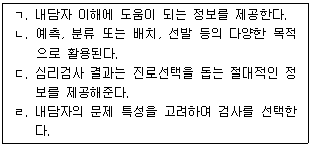
- ㄱ, ㄴ
- ㄱ, ㄴ, ㄷ
- ㄱ, ㄴ, ㄹ
- ㄱ, ㄷ, ㄹ
- ㄴ, ㄷ, ㄹ
(정답률: 알수없음)
5. 홀랜드(J. Holland)가 제안한 여섯 가지 유형과 그 대표 직업의 연결이 옳은 것은?
- 탐구적 유형(I): 판사, 연출가, 영업사원 등
- 사회적 유형(S): 사회복지사, 간호사, 언어치료사 등
- 관습적 유형(C): 항공기조종사, 엔지니어, 운동선수 등
- 기업적 유형(E): 사서, 법무사, 무대감독 등
- 실재적 유형(R): 공인회계사, 은행원, 세무사 등
(정답률: 알수없음)
6. 진로상담 과정에서 다음과 같은 진로문제를 특징적으로 경험하는 대상은?
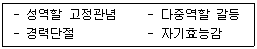
- 여성
- 다문화청소년
- 남성
- 장애인
- 실업자
(정답률: 알수없음)
7. 수퍼(D. Super)의 생애진로무지개에 관한 설명으로 옳은 것을 모두 고른 것은?
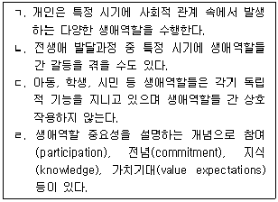
- ㄱ, ㄴ
- ㄴ, ㄷ
- ㄷ, ㄹ
- ㄱ, ㄴ, ㄹ
- ㄱ, ㄷ, ㄹ
(정답률: 알수없음)
8. 샘슨 등(Sampson et al.)이 제시한 진로결정 상태에 따른 내담자 분류에 관한 설명으로 옳지 않은 것은?
- 진로 결정자(the decided): 자신의 선택을 이행하기 위해 도움이 필요한 내담자
- 진로 미결정자(the undecided): 진로의사가 결정된 것처럼 보이지만 실제로는 결정을 하지 못하는 내담자
- 진로 미결정자(the undecided): 자신의 모습, 직업 혹은 의사결정을 위한 지식이 부족한 내담자
- 진로 무결정자/우유부단형(the indecisive): 일반적으로 문제해결과정에서 부적응적인 성격을 지니고 있는 내담자
- 진로 결정자(the decided): 자신의 선택이 잘 된 것인지 명료화하기를 원하는 내담자
(정답률: 알수없음)
9. 다음은 크럼볼츠(J. Krumboltz)의 사회학습이론에서 진로결정에 영향을 미치는 요인에 관한 설명이다. ( )에 들어갈 용어를 순서대로 나열한 것은?
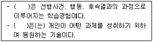
- 연합적 학습경험, 과제접근기술
- 도구적 학습경험, 환경적 조건과 사건
- 대리적 학습경험, 환경적 조건과 사건
- 도구적 학습경험, 자기일반화
- 도구적 학습경험, 과제접근기술
(정답률: 알수없음)
10. 공공기관과 해당 기관에서 제공하는 진로정보의 연결이 옳지 않은 것은?
- 한국노동연구원: 매월고용동향분석, 국내노동동향, 노동시장전망
- 한국고용정보원: 지역고용동향브리프, 한국직업전망
- 한국지역정보개발원: 직업교육훈련지표, 진학정보, 자격정보
- 통계청: 한국표준산업분류, 한국표준직업분류
- 고용노동부: 구인구직통계, 고용노동통계연감
(정답률: 알수없음)
11. 진로상담과정에서 발생할 수 있는 저항에 관한 설명으로 옳은 것을 모두 고른 것은?
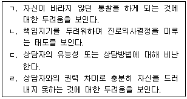
- ㄱ, ㄹ
- ㄴ, ㄷ
- ㄱ, ㄴ, ㄹ
- ㄴ, ㄷ, ㄹ
- ㄱ, ㄴ, ㄷ, ㄹ
(정답률: 알수없음)
12. 수퍼(D. Super)의 진로발달이론의 내용으로 옳지 않은 것은?
- 개인은 능력이나 흥미, 성격에 있어서 각각 차이점을 갖고 있다.
- 진로발달이란 진로에 관한 자아개념의 발달이다.
- 진로성숙도는 가설적 구인이며 단일한 특질이 아니다.
- 개인의 진로유형의 본질은 부모의 사회경제적 수준, 지적 능력, 성격 특성, 진로성숙도, 기회 등에 의해 결정된다.
- 진로발달단계의 과정에서 재순환은 일어날 수 없다.
(정답률: 알수없음)
13. 사비카스(M. Savickas)가 제안한 진로적응도(career adaptability)의 차원으로 옳지 않은 것은?
- 관심(concern)
- 통제(control)
- 기회(chance)
- 호기심(curiosity)
- 자신감(confidence)
(정답률: 알수없음)
14. 굿맨, 슐로스버그와 앤더슨(Goodman, Schlossberg & Anderson)이 제시한 개인의 진로 전환에 영향을 주는 네 가지 요소(4S)가 아닌 것은?
- 자아(Self)
- 지원(Support)
- 상황(Situation)
- 제도(System)
- 전략(Strategies)
(정답률: 알수없음)
15. 다위스와 롭퀴스트(Dawis & Lofquist)의 직업적응이론에서 분류한 적응양식 중 다음 사례에서 민수가 보이고 있는 것은?
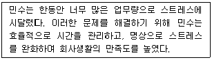
- 반응성(reactiveness)
- 적극성(activeness)
- 회피성(avoidance)
- 유연성(flexibility)
- 민첩성(celerity)
(정답률: 알수없음)
16. 사회인지진로이론에 관한 설명으로 옳은 것을 모두 고른 것은?
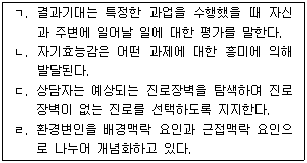
- ㄱ, ㄹ
- ㄷ, ㄹ
- ㄱ, ㄴ, ㄷ
- ㄱ, ㄴ, ㄹ
- ㄱ, ㄷ, ㄹ
(정답률: 알수없음)
17. 블라우(P. Blau) 등의 사회학적 이론에 관한 설명으로 옳지 않은 것을 모두 고른 것은?
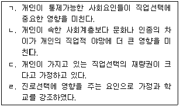
- ㄱ, ㄴ
- ㄱ, ㄷ
- ㄴ, ㄹ
- ㄱ, ㄴ, ㄷ
- ㄴ, ㄷ, ㄹ
(정답률: 알수없음)
18. 진로상담이론과 상담기법의 연결이 옳지 않은 것은?
- 수퍼(D. Super)의 진로발달이론: 역할중요도 평가
- 윌리암슨(E. Williamson)의 특성요인이론: 면담을 통한 자기이해 신장
- 하케트와 베츠(Hackett & Betz)의 사회인지진로이론: 자기효능감의 평가와 개입
- 크럼볼츠(J. Krumboltz)의 사회학습이론: 학습경험 촉진하기
- 갓프레드슨(L. Gottfredson)의 제한ㆍ타협이론: 진로가계도 탐색
(정답률: 알수없음)
19. 긴즈버그(E. Ginzberg) 진로이론의 발단단계를 순서대로 나열한 것은?
- 잠정기(tentative) - 환상기(fantasy) - 현실기(realistic)
- 환상기(fantasy) - 잠정기(tentative) - 현실기(realistic)
- 환상기(fantasy) - 잠정기(tentative) - 확립기(establishment)
- 성장기(growth) - 환상기(fantasy) - 현실기(realistic)
- 성장기(growth) - 탐색기(exploration) - 확립기(establishment)
(정답률: 알수없음)
20. 브라운(D. Brown)의 가치중심적 진로모델에 관한 설명으로 옳지 않은 것은?
- 가치는 환경 속에서 가치를 담은 정보를 획득함으로써 학습된다.
- 가치는 유전적 요인에 의해 영향 받지 않는다.
- 가치에 의해 흥미가 발달되지만, 흥미는 가치만큼 행동결정에 큰 영향을 미치지 않는다.
- 생애만족은 모든 필수적인 가치들을 만족시키는 생애역할에 달려 있다.
- 가치는 일상생활에서 경험하는 정보처리에 많은 영향을 미친다.
(정답률: 알수없음)
21. 다음은 아동ㆍ청소년의 생각을 기술한 것이다. 갓프레드슨(L. Gottfredson)의 제한ㆍ타협 이론에서 제안한 발달단계를 순서대로 나열한 것은?
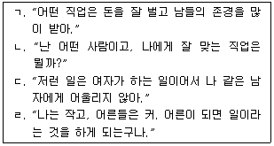
- ㄴ – ㄹ – ㄷ – ㄱ
- ㄷ – ㄹ – ㄱ – ㄴ
- ㄷ – ㄹ – ㄴ – ㄱ
- ㄹ – ㄷ – ㄱ – ㄴ
- ㄹ – ㄷ – ㄴ – ㄱ
(정답률: 알수없음)
22. 로우(A. Roe)의 욕구이론에 관한 비판으로 옳은 것을 모두 고른 것은?
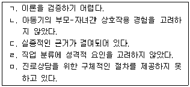
- ㄷ, ㅁ
- ㄱ, ㄴ, ㅁ
- ㄱ, ㄷ, ㅁ
- ㄱ, ㄴ, ㄷ, ㄹ
- ㄱ, ㄷ, ㄹ, ㅁ
(정답률: 알수없음)
23. 하렌(V. Harren)의 진로의사결정유형 이론에 관한 설명으로 옳지 않은 것은?
- 진로의사결정유형이란 의사결정이 필요한 과제를 인식하고 그에 반응하는 개인의 특징적 유형을 말한다.
- 의사결정과정으로 인식, 계획, 확신, 이행 단계를 제안하였다.
- 합리적 유형은 자신과 상황에 대한 정확한 정보를 수집하고, 논리적으로 의사결정을 하며 결정에 대한 책임을 진다.
- 직관적 유형은 현재 감정에 주의를 기울이며 결정의 책임을 외부로 돌리는 경향이 있다.
- 의사결정과정에 영향을 미치는 개인적인 특징으로 의사결정유형과 자아개념을 제안하였다.
(정답률: 알수없음)
24. 특성요인이론에 관한 설명으로 옳은 것은?
- 심리검사를 통해 가변적인 특성을 측정한다.
- 윌리암슨(E. Williamson)은 비지시적 접근과 공감을 강조한다.
- 윌리암슨(E. Williamson)은 진로의사결정의 문제를 무선택, 불확실한 선택, 의존적 선택, 흥미와 가치간의 모순으로 구분한다.
- 직업선택은 인지적인 과정으로 개인의 특성과 직업의 특성을 짝짓는 것이 가능하다고 본다.
- 개인의 특성이 어떻게 발달되었는지 충분히 설명하고 있다.
(정답률: 알수없음)
25. 다문화 청소년과 진로상담을 할 때 주의해야 할 내용으로 옳은 것을 모두 고른 것은?
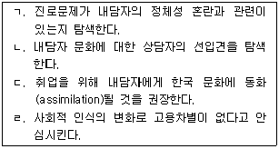
- ㄱ
- ㄱ, ㄴ
- ㄴ, ㄹ
- ㄱ, ㄴ, ㄷ
- ㄱ, ㄴ, ㄹ
(정답률: 알수없음)
2과목: 집단상담
26. 집단규범에 관한 설명으로 옳지 않은 것은?
- 집단의 초기 단계에 형성되도록 한다.
- 집단상담자는 집단규범 형성에 영향을 준다.
- 집단원들의 선입견에 의해 형성된 암묵적 규범은 집단에 부정적인 영향을 미칠 수 있다.
- 명확하게 제시될수록 집단목표 달성에 도움이 된다.
- 집단 초기에 설정한 규범은 종결까지 변경하지 않는다.
(정답률: 알수없음)
27. 집단상담 종결기의 특징이 나타나는 내담자 반응을 모두 고른 것은?
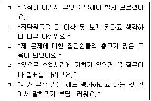
- ㄱ, ㄴ
- ㄷ, ㄹ
- ㄴ, ㄷ, ㄹ
- ㄴ, ㄷ, ㅁ
- ㄴ, ㄷ, ㄹ, ㅁ
(정답률: 알수없음)
28. 2명의 상담자가 공동으로 집단상담을 운영할 때 옳지 않은 것은?
- 공동지도자 간 서로 존중하고 신뢰하는 관계를 형성한다.
- 공동지도자들이 집단회기를 교대로 이끈다.
- 공동지도자들은 서로의 관점과 의견 차이를 논의하기 위한 시간을 갖는다.
- 공동지도자 간의 불일치가 집단 안에서 건설적으로 해결된다면 집단원들에게 모범이 된다.
- 한 지도자가 문제행동을 보이는 집단원에게 주의를 기울이는 동안 다른 지도자는 나머지 집단원들의 반응에 주의를 기울인다.
(정답률: 알수없음)
29. 집단상담 과정에서 '지금-여기'에 초점을 둠으로써 얻을 수 있는 이점을 모두 고른 것은?
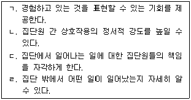
- ㄱ, ㄴ
- ㄷ, ㄹ
- ㄱ, ㄴ, ㄷ
- ㄱ, ㄴ, ㄹ
- ㄱ, ㄴ, ㄷ, ㄹ
(정답률: 알수없음)
30. 집단상담 발달단계에 따른 상담자 역할을 순서대로 나열한 것은?
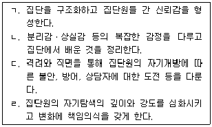
- ㄱ – ㄷ – ㄹ – ㄴ
- ㄱ – ㄹ – ㄴ – ㄷ
- ㄱ – ㄹ – ㄷ – ㄴ
- ㄴ – ㄷ – ㄱ – ㄹ
- ㄷ – ㄹ – ㄴ – ㄱ
(정답률: 알수없음)
31. 비자발적인 집단원에 대한 상담자의 개입으로 옳지 않은 것은?
- 적극적인 참여의 중요성을 설명한다.
- 침묵할 자유와 권리가 있음을 알려준다.
- 집단에 억지로 참여하게 된 것에 대한 솔직한 감정을 표현할 수 있도록 한다.
- 기대 이하의 수준으로 집단에 참여한 경우 집단상담을 받은 것으로 인정하지 않을 수 있음을 설명한다.
- 학교폭력 가해학생이 법적 명령에 의해 집단에 출석할 때, 학교장의 요구가 있더라도 상담결과에 대한 비밀이 보장됨을 알린다.
(정답률: 알수없음)
32. 다음은 스트레스 감소를 위한 이야기치료 집단상담에 관한 내용이다. 상담자의 개입방법을 옳게 나열한 것은?(순서대로 ㄱ, ㄴ, ㄷ, ㄹ)
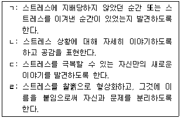
- 독특한 결과 찾기, 대안적 이야기 형성, 문제 이야기 경청, 문제의 외재화
- 문제 이야기 경청, 문제의 외재화, 대안적 이야기 형성, 독특한 결과 찾기
- 문제의 외재화, 대안적 이야기 형성, 문제 이야기 경청, 독특한 결과 찾기
- 독특한 결과 찾기, 문제 이야기 경청, 대안적 이야기 형성, 문제의 외재화
- 문제의 외재화, 문제 이야기 경청, 대안적 이야기 형성, 독특한 결과 찾기
(정답률: 알수없음)
33. 다문화 가정 청소년을 대상으로 집단상담을 운영할 때 상담자의 태도로 옳지 않은 것은?
- 다른 인종, 민족 집단에 대한 자신의 고정관념과 편견을 검토하고 교정한다.
- 집단원들이 다문화에 관심을 표현하지 않아도 문화적 차이를 고려하여 집단을 운영한다.
- 다문화 집단의 문화적 유산 및 역사적 배경에 대한 지식을 습득한다.
- 문화적으로 적절한 기법을 사용한다.
- 집단원의 행동은 인종, 문화와 관련성이 없음을 인식한다.
(정답률: 알수없음)
34. 청소년 집단상담에서 비밀유지 원칙을 위반한 집단원이 있을 경우 상담자의 대처 방법으로 옳은 것은?
- 어떻게 비밀유지 원칙을 위반하게 되었는지 문제 집단원의 주변인들을 면담한다.
- 문제 집단원의 퇴출을 결정할 때 비밀유지 위반의 고의성은 고려하지 않는다.
- 문제 집단원의 퇴출을 결정할 때 집단원들의 의견은 고려하지 않는다.
- 문제 집단원이 잔류하게 될 때 다른 집단원들이 비난하거나 공격하는 상황이 발생하는지 주의깊게 관찰한다.
- 문제 집단원을 퇴출하기로 한 경우, 그가 퇴출당하는 것에 대해 느끼는 부정적인 감정을 탐색하지 않는다.
(정답률: 알수없음)
35. 인터넷 중독 청소년을 위한 현실치료 집단상담에서 우볼딩(R. Wubbolding)의 행동변화 작업을 순서대로 나열한 것은?
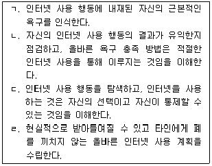
- ㄱ – ㄴ – ㄷ – ㄹ
- ㄱ – ㄷ – ㄴ – ㄹ
- ㄴ – ㄱ – ㄹ – ㄷ
- ㄷ – ㄱ – ㄴ – ㄹ
- ㄷ – ㄱ – ㄹ – ㄴ
(정답률: 알수없음)
36. 여고생들을 위한 성장집단에서 상담자가 사용한 기법은?
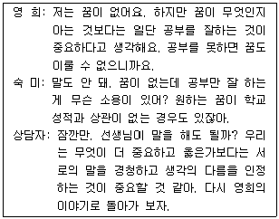
- 차단하기
- 연결하기
- 직면하기
- 해석하기
- 유도하기
(정답률: 알수없음)
37. 합리적 정서행동(REBT) 집단상담에 관한 설명으로 옳은 것을 모두 고른 것은?
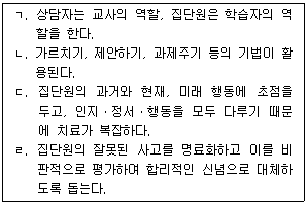
- ㄱ, ㄴ
- ㄱ, ㄷ
- ㄱ, ㄴ, ㄹ
- ㄴ, ㄷ, ㄹ
- ㄱ, ㄴ, ㄷ, ㄹ
(정답률: 알수없음)
38. 다음 사례에서 적용한 상담기법은?
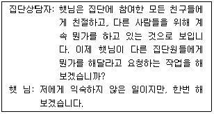
- 반전기법
- 바꾸어말하기
- 직면하기
- 빈의자기법
- 마술상점기법
(정답률: 알수없음)
39. 집단상담의 치료적 요인에 관한 설명으로 옳지 않은 것은?
- 청소년들에게는 자신에 대한 다른 사람의 피드백을 경험하는 대인관계 학습이 중요한 치료적 요인이다.
- 치료적 요인에 의한 변화경험은 집단상담자, 집단원, 집단 활동 등의 다양한 상호작용의 결과로 발생한다.
- 집단상담자는 집단 운영을 계획할 때 집단의 치료적 요인을 인식해야 한다.
- 얄롬(I. Yalom)은 모험시도, 마법 등을 치료적 요인으로 제시하였다.
- 집단원 개개인은 서로 다른 치료적 요인에 의해 도움을 받을 수 있다.
(정답률: 알수없음)
40. 청소년이 집단상담에 참여할 때의 이점으로 옳지 않은 것은?
- 또래들 간 상호작용을 관찰하며 자기주장 등 새로운 사회적 기술을 학습할 수 있다.
- 삶에서 어려운 경험을 한 것을 인식하고 자신이 특별히 힘든 사람이라는 생각을 강화할 수 있다.
- 외부적 위협을 느끼지 않으면서 현실적 문제 상황에 대한 자기 나름대로의 적응 및 대처방안을 체득할 수 있다.
- 성인 집단상담자와의 힘의 균형을 경험하면서 성인과의 효과적인 상호작용 기술을 학습할 수 있다.
- 또래와의 상호 교류 능력이 개발되어 청소년기의 자기중심적인 특성에서 벗어날 수 있다.
(정답률: 알수없음)
41. 집단상담의 윤리적 규범에 관한 설명으로 옳은 것을 모두 고른 것은?
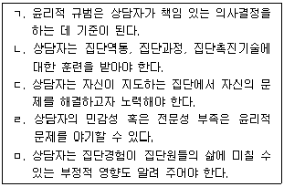
- ㄱ, ㄷ
- ㄴ, ㄹ, ㅁ
- ㄱ, ㄴ, ㄹ, ㅁ
- ㄴ, ㄷ, ㄹ, ㅁ
- ㄱ, ㄴ, ㄷ, ㄹ, ㅁ
(정답률: 알수없음)
42. 과정분석(processing)에 관한 설명으로 옳은 것은?
- 구조화 집단에서는 과정분석이 필요 없다.
- 과정분석은 초심자가 쉽게 배울 수 있는 기술이다.
- 초점유지, 개인화는 과정분석의 방법이 아니다.
- 집단원은 다른 집단원이 말한 내용을 기억하고 있어야 한다.
- 집단회기에서 경험한 사고, 감정, 대인관계의 패턴 등에 관하여 성찰한 내용을 서로 공유하는 활동이다.
(정답률: 알수없음)
43. 집단상담 평가에 관한 설명으로 옳은 것은?
- 평가의 일차적인 목적은 목표 관리이다.
- 집단 밖에서 이루어지는 비공식적인 평가를 권장한다.
- 종결단계에서는 양적 평가만 사용한다.
- 녹화와 같은 행동관찰 평가는 비밀스럽게 진행한다.
- 집단원들의 상호 평가에서 부정적인 내용은 배제한다.
(정답률: 알수없음)
44. 학교집단상담 계획서에 포함되어야 할 내용으로 옳지 않은 것은?
- 학부모의 인적사항
- 기대효과와 평가
- 집단원의 선발방법
- 집단 프로그램 활동
- 집단상담의 필요성과 목적
(정답률: 알수없음)
45. 구조화된 집단상담 초기에 상담자가 해야 할 일을 모두 고른 것은?
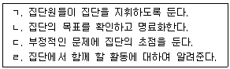
- ㄱ, ㄴ
- ㄱ, ㄷ
- ㄴ, ㄹ
- ㄱ, ㄴ, ㄹ
- ㄴ, ㄷ, ㄹ
(정답률: 알수없음)
46. 정신분석적 집단상담에 관한 설명으로 옳지 않은 것은?
- 부적응 행동들을 줄이기 위해서 훈습과정을 거친다.
- 관념이나 느낌, 환상 등을 자유롭게 표현하도록 하는 기법들을 사용한다.
- '지금과 여기'보다 '거기와 그때'에 더 주의를 기울인다.
- 부모와의 수직적 차원의 전이와 형제를 포함한 대인관계의 수평적 차원의 전이를 모두 다룬다.
- 집단상담자는 자기개방을 지양하고 권위적이고 객관적인 태도를 취한다.
(정답률: 알수없음)
47. 아들러(A. Adler)의 개인심리 집단상담에 관한 설명으로 옳지 않은 것은?
- 포괄적 평가에 기초하여 아동기 역동을 탐색한다.
- 가족구도, 생활양식 분석 등이 주 치료기법이다.
- 열등감 자각과 우월성 추구에 초점을 맞춘다.
- 고립되고 자기중심적인 사람은 집단원으로 선발하지 않는다.
- 집단원이 가지고 있는 부적절한 사적 논리를 파악하여 변화시킨다.
(정답률: 알수없음)
48. 실존주의 집단상담에 관한 설명으로 옳은 것을 모두 고른 것은?
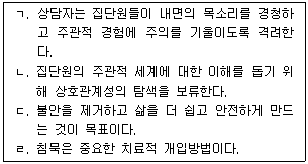
- ㄱ, ㄴ
- ㄱ, ㄹ
- ㄴ, ㄷ
- ㄱ, ㄴ, ㄷ
- ㄱ, ㄴ, ㄷ, ㄹ
(정답률: 알수없음)
49. 집단원의 문제행동에 대한 상담자의 대처로 옳지 않은 것을 모두 고른 것은?
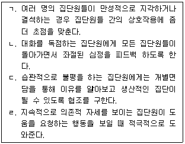
- ㄱ, ㄷ
- ㄴ, ㄹ
- ㄱ, ㄴ, ㄹ
- ㄴ, ㄷ, ㄹ
- ㄱ, ㄴ, ㄷ, ㄹ
(정답률: 알수없음)
50. 코리(G. Corey)가 주장한 유능한 집단 지도자의 개인적 특성에 관한 설명으로 옳지 않은 것은?
- '개인적인 힘'은 자신이 타인에게 미치는 영향력을 인식하며, 집단원들의 역량을 강화시키는 것이다.
- '용기'는 상담자라는 역할 뒤에 숨지 않고, 실수를 인정하며 자신의 통찰과 신념에 따라 행동하는 것이다.
- '집단과정에 대한 신뢰'는 집단의 치료적 힘을 믿고 집단 내에서 발생하는 갈등을 조정하기 위해 노력하는 것이다.
- '유머감각'은 비판에 대해 효과적이고 비공격적인 형식으로 반응하는 것이다.
- '함께 함'은 자신의 감정을 자각하고 표현하며, 집단원들과 마음을 함께 나누는 것이다.
(정답률: 알수없음)
3과목: 가족상담
51. 개방체계와 폐쇄체계에 관한 설명으로 옳은 것을 모두 고른 것은?
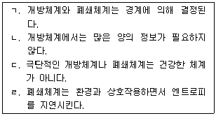
- ㄱ, ㄷ
- ㄴ, ㄹ
- ㄱ, ㄴ, ㄷ
- ㄴ, ㄷ, ㄹ
- ㄱ, ㄴ, ㄷ, ㄹ
(정답률: 알수없음)
52. 가족상담에서 활용되는 평가방법에 관한 설명으로 옳지 않은 것은?
- 가족체계분화척도(Differentiation in the Family System Scales)는 가족체계 내의 연결성과 분리성 정도를 측정한다.
- 동적가족화(Kinetic Family Drawing)는 개인이 가진 가족이미지를 파악하고 가족전체의 상호작용을 알 수 있는 투사적 도구이다.
- 합동가족화(Conjoint Family Drawing)는 가족성원에 관한 정보와 그들 간의 관계가 도식으로 제시되어 세대 간에 반복되는 유형을 알 수 있는 도구이다.
- 결혼적응척도(Dyadic Adjustment Scale)는 부부간의 일치성, 결합, 애정표현, 만족도 등 결혼생활의 질과 적응 정도를 측정한다.
- 부모-자녀 간 의사소통척도(Parents-Adolescent Communication Family Inventories)는 부모-자녀 간 의사소통의 기능 정도를 파악한다.
(정답률: 알수없음)
53. 가족상담의 첫 번째 회기에서 상담자의 행동으로 옳지 않은 것은?
- 분위기를 편안하게 만들기 위해 일상적인 대화를 나눈다.
- 가족 중 누가 먼저 말하는지, 누가 방해하는지 등을 관찰한다.
- 가족의 불안을 감소하기 위해 가족들이 앉을 자리를 정해서 안내한다.
- '왜 이 시점에서?'라는 생각을 가지고 가족이 제시하는 문제를 명료화한다.
- 상담 예약한 사람을 확인하고 예약 시에 나눈 대화를 공유하도록 요청한다.
(정답률: 알수없음)
54. 가족생활주기 중 성인자녀기(자녀독립기)에 해당하는 과업으로 옳지 않은 것은?
- 자녀의 취업과 결혼에 대해 지도한다.
- 가족구성원의 증감을 적극적으로 수용한다.
- 배우자와의 관계에서 역할과 규칙을 새롭게 정비한다.
- 학업과 직업 훈련 등을 통해 자녀가 독립할 수 있도록 도와준다.
- 자녀의 정체성 확립과 독립심 제고를 위해 가족 규칙과 역할에 대해 타협한다.
(정답률: 알수없음)
55. 다세대 모델에 관한 설명으로 옳지 않은 것은?
- 정서적 단절은 물리적인 단절을 전제한다.
- 삼각관계는 핵가족 내에서도 다중으로 있을 수 있다.
- 자아분화가 높은 사람은 타인의 평가에 연연하지 않는다.
- 가족투사과정은 가족 내에서 불안이 투사되는 과정을 말한다.
- 대표적인 핵가족 정서체계는 만성적 결혼갈등, 배우자의 역기능 등이다.
(정답률: 알수없음)
56. 구조적 모델에서 '상호작용의 창조'를 통하여 가족 내부의 구조를 파악하는 기법을 모두 고른 것은?
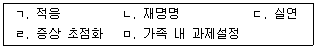
- ㄱ, ㄴ
- ㄱ, ㄷ
- ㄴ, ㄹ
- ㄷ, ㄹ
- ㄷ, ㅁ
(정답률: 알수없음)
57. 가족상담 모델에 따른 개입방법의 예시가 옳은 것은?
- 이야기치료 – 엄마의 우울증을 외재화하고 변화를 위한 과제를 제시한다.
- 다세대 모델 – 가족투사과정을 파악하여 엄마의 불안을 감소시킨다.
- 해결중심단기치료 – 질문기법을 사용하여 자녀의 야뇨증 원인을 파악한다.
- 구조적 모델 – 아빠와 아들의 연합을 강화하여 남성하위체계를 명확하게 한다.
- 경험적 모델 – 자존감이 낮은 자녀의 가족에게 무의식적 상호작용에 대한 해석을 제공한다.
(정답률: 알수없음)
58. 가족조각에 관한 설명으로 옳지 않은 것은?
- 정서적 경험을 공유하기 위한 기법이다.
- 경험적 모델의 진단 혹은 치료 수단이다.
- 자기표현이 어려운 아동이 포함된 가족에는 비효과적이다.
- 물리적 거리, 자세 등을 통해 가족 관계를 파악할 수 있다.
- 가족조각을 시행하기 위해 조각가, 모니터, 연기자의 역할이 필요하다.
(정답률: 알수없음)
59. 상담 기법과 해당 모델의 연결이 옳은 것은?
- 유머(humor) – 다세대 모델
- 집중/강조(intensity) – 경험적 모델
- 나-입장(I-position) – 이야기치료
- 가장 기법(pretend technique) – 전략적 모델
- 생활 연대기(life chronology) – 구조적 모델
(정답률: 알수없음)
60. 다음 사례에서 철호의 부모상담에 적용할 모델과 개입 방법으로 옳은 것은?
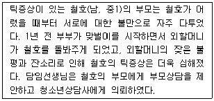
- 해결중심단기치료 – 틱증상에 이름을 붙여서 부르도록 한다.
- 다세대 모델 – 부부의 의사소통방식을 일치형으로 변화시킨다.
- 전략적 모델 – 철호의 틱증상이 유발하는 불편감 정도를 숫자로 나타내보도록 한다.
- 구조적 모델 – 틱증상의 완화를 위해 부부하위체계가 강화되도록 재정비한다.
- 이야기치료 – 틱증상의 원인이 부모 갈등으로 인한 불안감에 있다는 것을 인지하도록 한다.
(정답률: 알수없음)
61. 다음 제시된 가족을 위한 개입 계획으로 옳지 않은 것은?
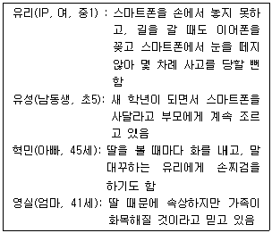
- 부모하위체계를 강화한다.
- 문제의 원인을 수동적인 엄마에게서 찾는다.
- 유리가 스마트폰을 사용하지 않을 때를 찾아본다.
- 자녀훈육방식에 대한 다세대 전수과정을 살펴본다.
- 스마트폰 사용에 대한 가족규칙의 타당성을 검토한다.
(정답률: 알수없음)
62. 민정(여, 고1)이는 친구들과 잘 어울리지 못하고 학교 성적도 좋지 않은 것에 대해 비관하던 중, 최근에는 부모와의 대화도 거부하고 자해를 시도하였다. 민정이네 가족에게 적용할 경험적 모델의 기법으로 옳은 것을 모두 고른 것은?
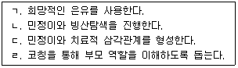
- ㄱ, ㄴ
- ㄷ, ㄹ
- ㄱ, ㄴ, ㄹ
- ㄴ, ㄷ, ㄹ
- ㄱ, ㄴ, ㄷ, ㄹ
(정답률: 알수없음)
63. 다음 상황에 적합한 가족평가의 기법은?
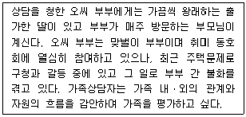
- 가계도
- 생태도
- MBTI
- FACES
- ENRICH
(정답률: 알수없음)
64. 다음에서 적용된 가족상담 기법은?
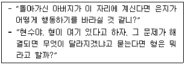
- 추적(tracking)
- 실연(enactment)
- 재정의(reframing)
- 기적 질문(miracle question)
- 관계성 질문(relationship question)
(정답률: 알수없음)
65. 가족상담 초기과정에서의 구조화에 포함되지 않는 것은?
- 구체적 상담기법 소개
- 비밀보장에 대한 안내
- 상담시간, 횟수, 장소 안내
- 상담자 역할의 범위와 한계 설명
- 상담 약속을 못 지킬 경우 연락방법 설명
(정답률: 알수없음)
66. 다음 상황과 이야기치료 가족상담자의 개입에 관한 설명으로 옳지 않은 것은?
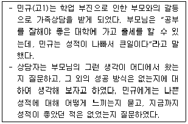
- 부모님은 '문제로 가득 찬 이야기'를 제시하고 있다.
- 상담자는 민규와 문제를 분리시키는 기법을 사용하고 있다.
- 상담자는 부모님이 따르는 지배담론의 해체를 시도하고 있다.
- 상담자의 개입방식은 사회구성주의의 영향을 받은 것이다.
- 상담자는 민규에게 문제의 영향력을 평가하게 하고 독특한 결과를 탐색하도록 이끌고 있다.
(정답률: 알수없음)
67. 가족상담 이론가와 기법의 연결이 옳지 않은 것은?
- 보웬(M. Bowen) - 과정질문(process question)
- 스튜어트(R. Stuart) - 돌봄의 날(caring day)
- 사티어(V. Satir) - 원가족도표(family of origin map)
- 드 쉐이저(S. de Shazer) - 척도질문(scaling question)
- 보스조르메니 내지(I. Boszormenyi-Nagy) - 증상처방(symptom prescription)
(정답률: 알수없음)
68. 다음 예시의 기법이 사용되는 가족상담 모델의 주요 기법 혹은 개념으로 옳지 않은 것은?
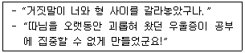
- 재저작(reauthoring)
- 스캐폴딩(scaffolding)
- 예외발견질문(exception-finding question)
- 외부증인(outsider witnesses)
- 회원재구성(re-membering)
(정답률: 알수없음)
69. 각 가족상담 모델에서 상담자에게 강조하는 것으로 옳지 않은 것은?
- 밀란 모델: 중립성
- 경험적 모델: 사람됨과 일치성
- 다세대 모델: 내담자보다 높은 자기분화 수준
- 구조적 모델: 가족에의 합류와 확고한 방법을 통한 개입
- 이야기치료: 문제 해결과 변화에 대한 직접적인 책임
(정답률: 알수없음)
70. 가족상담의 윤리 원칙 중 다양성 존중에 관한 예시를 모두 고른 것은?
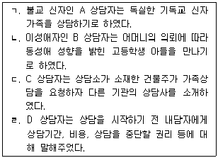
- ㄱ, ㄴ
- ㄴ, ㄷ
- ㄱ, ㄴ, ㄹ
- ㄱ, ㄷ, ㄹ
- ㄴ, ㄷ, ㄹ
(정답률: 알수없음)
71. 후기 가족상담의 이론적 기초에 관한 설명으로 옳은 것은?
- 상담자와 내담자 간의 위계적인 질서를 강조하였다.
- 블랙박스 모델로서 체계와 환경과의 상호작용에 초점을 두었다.
- 관계윤리, 가족출납부, 보이지 않는 충성심 등이 주요 개념을 형성하였다.
- 2차 사이버네틱스의 발전이 후기 가족상담이 탄생하게 된 배경이 되었다.
- 가족의 기능/역기능을 사정하기 위한 개념 개발과 특정 치료적 기법의 습득을 중시했다.
(정답률: 알수없음)
72. 다음에서 설명하는 개념은?
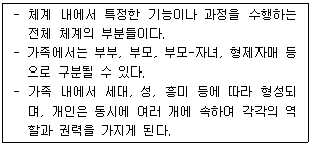
- 경계
- 항상성
- 피드백
- 하위체계
- 사이버네틱스
(정답률: 알수없음)
73. 가족상담 관련 개념의 설명으로 옳은 것을 모두 고른 것은?
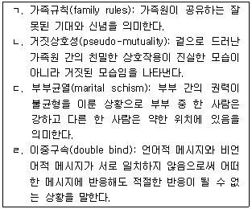
- ㄱ, ㄴ
- ㄴ, ㄷ
- ㄴ, ㄹ
- ㄷ, ㄹ
- ㄴ, ㄷ, ㄹ
(정답률: 알수없음)
74. 다음 기법을 사용하는 가족상담 모델의 상담목표로 옳은 것은?
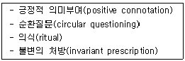
- 책임과 권리 사이의 공정한 균형
- 파괴적 가족게임의 중지
- 불안 감소와 자아분화 수준 향상
- 가족원의 무의식적 욕구와 제약에서의 해방
- 선호하는 방향으로 가족 스스로 이야기 쓰기
(정답률: 알수없음)
75. 가족상담의 이론적 기초에 관한 설명으로 옳은 것을 모두 고른 것은?
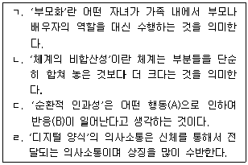
- ㄱ, ㄴ
- ㄴ, ㄷ
- ㄷ, ㄹ
- ㄱ, ㄴ, ㄷ
- ㄱ, ㄴ, ㄷ, ㄹ
(정답률: 알수없음)
4과목: 학업상담
76. 다음에서 사용하고 있는 시험불안에 관한 개입전략은?
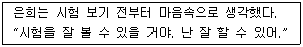
- 자기대화(self-talk) 하기
- 비합리적인 생각을 합리화하기
- 자기구실 만들기
- 이완훈련 하기
- 사전학습 강화하기
(정답률: 알수없음)
77. 학습전략 중 조직화 전략에 관한 기법으로 옳지 않은 것은?
- 정보를 도식화하기
- 이미지화하기
- 요소 간 내적 연결구조 만들기
- 요소 간 관계를 논리적으로 구성하기
- 주요 주제와 아이디어의 개요 작성하기
(정답률: 알수없음)
78. 효과적인 노트필기 방법으로 옳지 않은 것은?
- 글자는 다른 사람도 알아볼 수 있도록 쓴다.
- 노트필기를 잘 하기 위해 듣기 기술을 개선한다.
- 날짜를 기록하고 과목은 구분하여 작성한다.
- 자주 반복되는 내용은 약어를 사용한다.
- 수업 중에 설명되는 것은 모두 기록한다.
(정답률: 알수없음)
79. 협동학습전략의 효과에 관한 설명으로 옳지 않은 것은?
- 새로운 정보를 학습하는 데 도움이 된다.
- 개별학습과 수행과제에 대한 전이를 용이하게 한다.
- 지식의 공유가 높을수록 각 학생들의 학습에 긍정적인 영향을 준다.
- 상호이해, 타인에 대한 긍정적 태도, 친절함 등을 길러주는 데 효과적이다.
- 자기생활을 관리하여 스트레스에 따른 소진을 예방해 준다.
(정답률: 알수없음)
80. 주의집중 문제의 원인에 관한 설명으로 옳은 것을 모두 고른 것은?
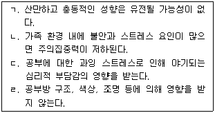
- ㄱ, ㄴ
- ㄱ, ㄷ
- ㄴ, ㄷ
- ㄱ, ㄴ, ㄷ
- ㄴ, ㄷ, ㄹ
(정답률: 알수없음)
81. 다음과 같은 교사의 반응에서 로젠탈과 제이컵슨(Rosenthal & Jacobson)이 제시한 개념으로 옳은 것은?
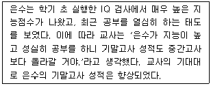
- 모델링(modeling)
- 행동조성법(behavior shaping)
- 지시하기(directives)
- 결과기대(outcome expectation)
- 자기충족적 예언(self-fulfilling prophecy)
(정답률: 알수없음)
82. 학습동기가 부족한 내담자의 동기 향상 방법으로 옳지 않은 것은?
- 행동문제에 대해 객관적으로 평가할 수 있게 해 준다.
- 수행 가능한 과제를 달성하게 함으로써 자신의 능력을 지각하게 한다.
- 학습동기가 낮은 이유를 파악하고 후속자극을 통해 강화한다.
- 능력과 같은 외적 귀인보다 과제 난이도와 같은 내적 귀인을 하게 한다.
- 초기에는 간헐적 강화를 시도하다가 점차 자연강화를 받을 수 있도록 환경을 조성한다.
(정답률: 알수없음)
83. 다음 예시에 해당하는 로크와 라뎀(Locke & Latham)의 목표의 조건은?
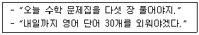
- 근접성, 노력
- 근접성, 능력
- 난이도, 능력
- 구체성, 노력
- 구체성, 근접성
(정답률: 알수없음)
84. 주의집중 문제를 가진 내담자의 학업상담 전략으로 옳은 것은?
- 주의집중력 향상 정도는 얼마나 오랜 시간동안 공부를 했느냐를 근거로 평가한다.
- 일반적인 방해 요인뿐만 아니라 내담자에게 해당되는 집중 방해 요인을 찾는다.
- 일반적으로 초등학교 고학년과 중학생은 집중할 수 있는 시간이 15∼20분임을 고려한다.
- 어려워하거나 흥미가 낮은 과목을 먼저 공부하도록 한다.
- 식습관과 수면습관은 주의집중과 관계가 없으므로 학업전략에 초점을 맞춘다.
(정답률: 알수없음)
85. 토마스와 로빈슨(Thomas & Robinson)의 PQ4R의 단계에서 암송(Recite)단계에 해당하는 것을 모두 고른 것은?
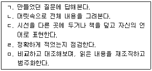
- ㄱ, ㄴ, ㄷ
- ㄱ, ㄷ, ㄹ
- ㄱ, ㄹ, ㅁ
- ㄴ, ㄷ, ㄹ
- ㄴ, ㄹ, ㅁ
(정답률: 알수없음)
86. 학습부진 영재아에 관한 설명으로 옳지 않은 것은?
- 완벽주의 성향으로 성공할 가능성이 있는 학업이나 활동만을 선택하는 경향이 있다.
- 신경체계의 과민성으로 인해 많은 감각 자극을 수용하여 지적능력이 나타나는 반면, 과잉행동성을 나타낼 수 있다.
- 창의적 욕구와 능력의 표현을 억압하는 사회 압력 때문에 사회적 고립을 경험할 수 있다.
- 특정문제에 기인하기 때문에 원인을 찾아 치료하는 것이 우선이다.
- 학교에서 영재의 학습 양식에 맞는 교육적 기회가 주어지지 않아서 나타날 수 있다.
(정답률: 알수없음)
87. 학업상담에서 상담자 역할로 옳지 않은 것은?
- 비자발적 내담자는 내담자의 동기와 부모의 요구를 현실화해야 한다.
- 학업문제와 그 외의 문제를 구분해야 한다.
- 학업상담 내용을 담임교사에게 알려야 한다.
- 학습전략 프로그램을 통해 공부 방법을 개선시킬 수 있다.
- 복합적인 학습부진의 문제를 해결하기 위해 심각성에 따른 우선순위를 정한다.
(정답률: 알수없음)
88. 다음과 같은 연구 결과를 제시한 학자는?
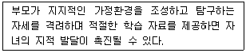
- 콜먼(J. Coleman)
- 미스(J. Meece)
- 브라운(A. Brown)
- 브로피와 굿(Brophy & Good)
- 로젠탈과 제이컵슨(Rosenthal & Jacobson)
(정답률: 알수없음)
89. 학업과 관련된 인지적 영역의 주요 요인을 모두 고른 것은?
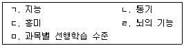
- ㄱ, ㄴ
- ㄱ, ㄹ
- ㄱ, ㄴ, ㄷ
- ㄱ, ㄹ, ㅁ
- ㄷ, ㄹ, ㅁ
(정답률: 알수없음)
90. 테일러(R. Taylor)가 제시한 학습과진아와 비교한 학습부진아의 특성으로 옳지 않은 것은?
- 학습과진아에 비해 불안을 더 가지고 있다.
- 학습과진아에 비해 자기비판적이고 부적절감을 가지고 있다.
- 학습과진아에 비해 부모 및 교사와 비교적 원만한 관계를 유지한다.
- 학습과진아에 비해 의존감과 독립의 갈등을 더 겪는다.
- 학습과진아는 학업지향적인 반면, 학습부진아는 사회지향적이다.
(정답률: 알수없음)
91. ( )에 들어갈 용어로 알맞은 것은?
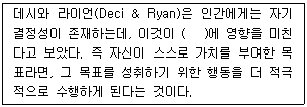
- 흥미
- 동기
- 조절
- 효능감
- 자아개념
(정답률: 알수없음)
92. 학습부진에 관한 설명으로 옳지 않은 것은?
- 개인이 특정한 영역을 제대로 하지 못하거나 기대했던 것보다 잘하지 못할 때 쓰는 포괄적인 개념이다.
- 능력과 성취의 편차, 즉 기대되는 학년 수준과 성취된 학년의 차이 등으로 설명할 수 있다.
- 학습부진아는 다수의 학습자에게 사용되는 보편적 교재나 교수방법으로는 학습하지 못하는 특징을 지니고 있다.
- 학생이 정상적인 지적능력과 잠재적인 능력을 지니면서도, 수락 가능한 최저수준의 학업 성취에 도달하지 못하는 상태를 말한다.
- 지능검사에서 지능지수 70 이하로 전반적 지적능력이 현저히 정상 이하인 상태이면서, 적응능력에 결함이나 손상이 있고 18세 이하인 경우를 말한다.
(정답률: 알수없음)
93. 기어리(D. Geary)가 제시한 수학학습장애의 유형으로 옳지 않은 것은?
- 읽기장애가 공존하는 장애
- 연산절차 상의 어려움을 겪는 장애
- 수리적 정보의 시ㆍ공간적 표상에 어려움을 겪는 장애
- 방향이나 시간개념 상의 어려움을 겪는 장애
- 단순 연산의 인출과 장기기억화의 어려움으로 인한 장애
(정답률: 알수없음)
94. DSM-5에서 제시한 특정학습장애의 진단기준으로 옳지 않은 것은?
- 보유한 학습기술이 개인의 생활연령에 비추어 기대되는 정도보다 현저히 양적으로 낮고, 학업 및 직업적 수행 또는 일상생활 활동을 현저히 방해한다.
- 학습기술을 배우고 사용하는 것의 어려움이 적절한 중재를 제공했음에도, 특정 증상 중 적어도 한 가지 이상이 최소 6개월 이상 지속된다.
- 개별적으로 실시된 표준화검사에서 읽기, 수학, 쓰기능력이 개인의 생활연령, 측정된 지능 그리고 나이에 적합한 교육에 비해 기대되는 정도보다 현저히 낮다(표준화검사 결과와 지능지수 사이에 2 표준편차 이상 차이가 남).
- 학습의 어려움은 학령기에 시작되나, 해당 학습기술을 요구하는 정도가 개인의 능력을 넘어서는 시기가 되어야 분명하게 드러날 수도 있다.
- 학습의 어려움은 지적장애, 교정되지 않은 시력 및 청력의 문제, 다른 정신적 또는 신경학적 장애, 정신사회적 불행, 학습지도사가 해당 언어에 능숙하지 못한 경우, 불충분한 교육적 지도로 더 잘 설명되지 않는다.
(정답률: 알수없음)
95. K-ABC의 하위 검사 중 습득도 척도에 해당하지 않는 것은?
- 삼각형
- 문자해독
- 수수께끼
- 표현어휘
- 인물과 장소
(정답률: 알수없음)
96. 다음 각 학습전략에 대한 정의를 제시한 학자는?
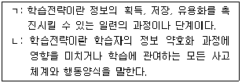
- ㄱ: 댄서로우(D. Dansereau) ㄴ: 와인스타인과 메이어(Weinstein & Mayer)
- ㄱ: 죤스(B. Jones) ㄴ: 대리(S. Derry)
- ㄱ: 코트렐(C. Cottrell) ㄴ: 댄서로우(D. Dansereau)
- ㄱ: 대리(S. Derry) ㄴ: 와인스타인과 메이어(Weinstein & Mayer)
- ㄱ: 댄서로우(D. Dansereau) ㄴ: 코트렐(C. Cottrell)
(정답률: 알수없음)
97. 학습장애진단을 위한 중재반응 3단계 모형에 관한 설명으로 옳지 않은 것은?
- 1단계에서 일반학급에서 통합교육을 받게 된다.
- 2단계에서 소집단 중심의 집중교육을 받게 된다.
- 진단은 3단계의 교육이 진행된 이후에 실시한다.
- 3단계에서 개별화 중심의 특수교육 지원이 이루어진다.
- 2단계에서 효과적인 중재에 반응하는 정도가 동등한 지적 능력을 소유한 또래들에 비해 적절한지를 점검한다.
(정답률: 알수없음)
98. 맥키치 등(J. McKeachie et al.)의 학습전략 중 자원관리 전략을 모두 고른 것은?
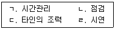
- ㄱ, ㄷ
- ㄱ, ㄹ
- ㄴ, ㄷ
- ㄴ, ㄹ
- ㄷ, ㄹ
(정답률: 알수없음)
99. 다음과 같이 시험불안을 해석하는 접근은?
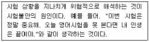
- 심리역동적 접근
- 욕구 이론적 접근
- 행동주의적 접근
- 인지론적 접근
- 가정환경적 접근
(정답률: 알수없음)
100. 상위인지 전략(metacognitive strategies)에 해당하는 활동이 아닌 것은?
- 암송하는 활동
- 학습목표를 설정하는 활동
- 자신의 이해 정도를 평가하는 활동
- 자신의 주의집중 정도를 확인하는 활동
- 정독하기 전에 먼저 개관하는 활동
(정답률: 알수없음)
추가 설명: 기업적 유형(E)은 일을 체계적으로 처리하고 조직적으로 일하는 것을 좋아한다. 따라서 자료를 체계적으로 처리하고 기록을 정리하는 것도 E 유형이 좋아하는 일 중 하나이다. 하지만 E 유형이 가장 중요시하는 것은 대인관계이며, 사람들과 함께 일하는 것이다.